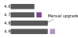

Highlights
We entirely rewrote and redesigned our very old warnings page.
The new warnings page is shorter, easier to understand by less technical people, less scary, more helpful, and visually attractive. We also integrated it in our download page so that people can learn more about tails while waiting for their download.

Read our articles on:
We finished making Tails ready for the deprecation of onion services v2 by upgrading to OnionShare 2.2.
We explained that users can reduce the size of the download of future automatic upgrades by doing a manual upgrade to the latest version.

We published our finances for 2020.
We documented better MAT and metadata.
We documented how to use Dino in Tails.
Dino is being considered as an option to replace Pidgin in Tails.
Please report your findings!
Metrics
- Tails has been started more than 629 659 times this month. This makes 20 989 boots a day on average.